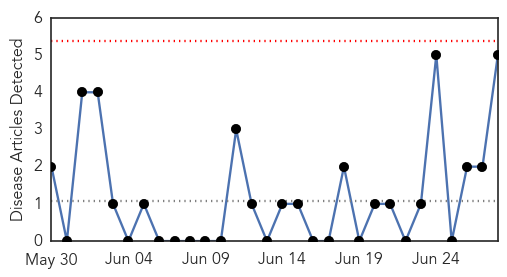
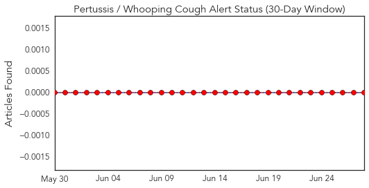
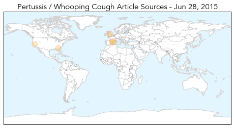
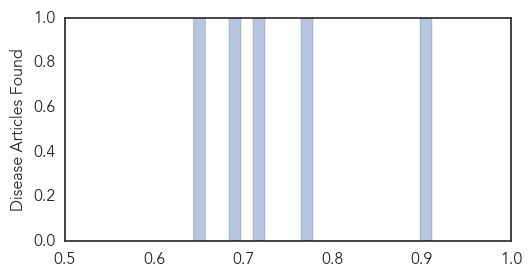

Bubonic Plague
30-Day Web Trend
1 alerts, 0 warnings

30-Day Twitter Trend
0 alerts, 0 warnings

Article Locations

Article Confidences

Top Articles:
Top Tweets:
-
No tweets found for Jun 28, 2015
Pertussis
30-Day Web Trend
0 alerts, 0 warnings

30-Day Twitter Trend
0 alerts, 0 warnings

Article Locations
Article Confidences
Top Articles:
- 0.911
- Unvaccinated 6-Year-Old Boy In Spain Dies From Diptheria : LIFE : Tech Times
- 0.775
- 3 Adverse Reactions Vaccine Critics Commonly Cite
- 0.714
- Public health encouraging early start on back-to-school vaccinations
- 0.686
- 4 of the Least Successful Vaccines in Medical History
- 0.644
- 6-year-old dies in Spain's first diphtheria case since 1987
Top Tweets:
-
No tweets found for Jun 28, 2015